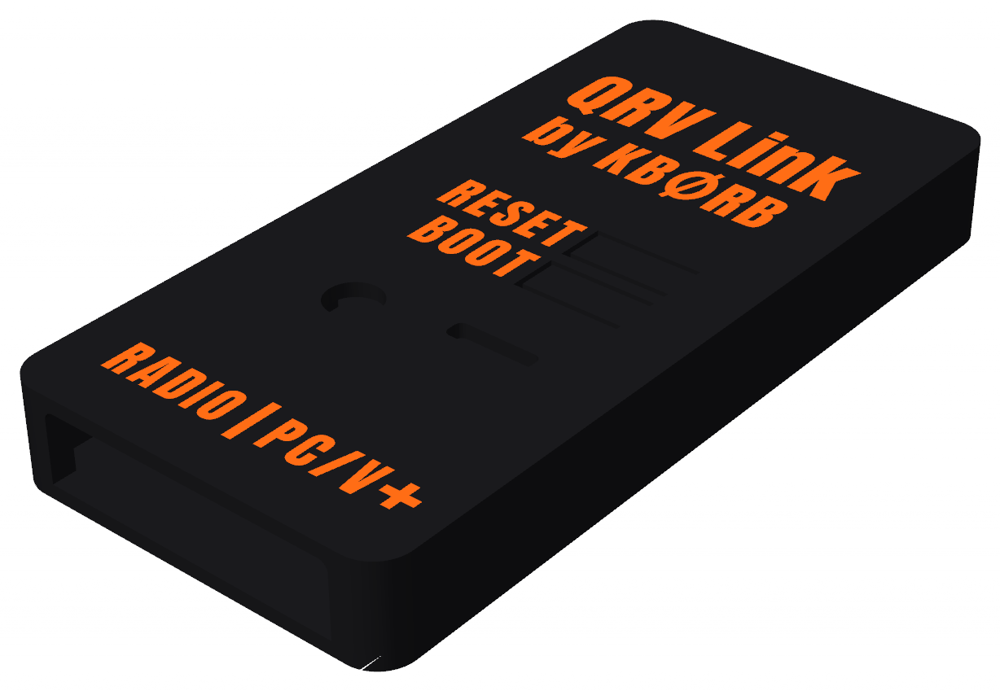
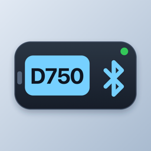

Install QRV LinkConnect iPhone and iPad packet apps to a Kenwood TM-D750 over Bluetooth.
Installs the latest QRV Link release.
Need an earlier version? After you connect, pick it from the Version list.
Already have QRV Link? The same button shows which version is on your board and upgrades it.
What you need
- An ESP32-S3-DevKitC-1-N16R8 board (16 MB flash, 8 MB PSRAM), available on Amazon, with its USB-OTG solder jumper bridged.
- A computer with Google Chrome or Microsoft Edge.
- A USB-C data cable. Some charge-only cables don't carry data.
Don't want to build one? If you'd like to purchase a pre-built QRV Link adapter, please email me at qso@kb0rb.net. I don't want to make a business out of it, but I would build a few at cost for those who don't want to DIY.
How to install
- Connect the board's USB-C port labeled UART or COM to your computer. Don't use the port labeled USB; that one goes to the radio. Quit any program that might be using the board, such as the Arduino IDE.
- Click Install/Upgrade QRV Link. In the list that appears, choose the
board: it's called
USB Single Serialon a Mac andUSB-Enhanced-SERIAL CH343on Windows. Click Connect. - The installer shows what's on the board now. Click Install (or Upgrade) and wait about a minute. When it's done the board restarts and its light flashes red, green, then blue.
Then connect the board's USB port to your TM-D750 and choose QRV Link in your app. The project page explains the radio settings and the status light.
If something goes wrong
The board isn't in the list
- Check that the cable is in the UART/COM port and is a data cable.
- Quit other programs that use serial ports, such as the Arduino IDE.
- On a Mac, if macOS asks whether to allow the accessory to connect, click Allow.
- On Windows, install the board's CH343 USB driver (from WCH, the chip's maker), then unplug and replug the board.
It can't connect to the board, or installing fails
Put the board in download mode: hold down its BOOT button, press and release RST, then let go of BOOT. Click Install/Upgrade QRV Link again. When it's done, press RST once to start the firmware.
I want the board's logs for troubleshooting
Click Install/Upgrade QRV Link and connect to the board, then click Show logs instead of installing. The board restarts and its startup messages appear; Copy puts them on your clipboard to share.
I want a specific older version
Click Install/Upgrade QRV Link and connect to the board, then choose the version from the Version list before installing. Versions before 0.0.4 show up in apps as K.K. Link, QRV Link's earlier name. Every version's changes are on the releases page.